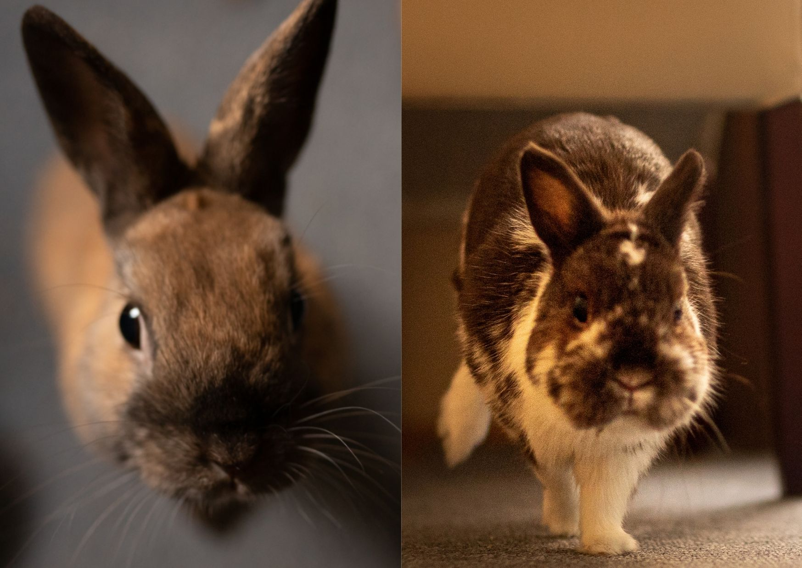

Wykształcenie
W lutym 2020 r. ukończyłam pierwszy stopień, a w lipcu 2021 r. drugi stopień studiów na kierunku inżynieria biomedyczna na Politechnice Wrocławskiej.
Zainteresowania
Niedawno zaczęłam przygodę z językiem hiszpańskim. Bodźcem do jego nauki były zajęcia na uczelni, które wybrałam w ramach realizacji drugiego języka. Jeszcze nie jestem mistrzem hiszpańskiego, dopiero zaczynam rozwijać się w tym kierunku. Chętnie w wolnym czasie uczę się nowych słówek. Uważam, że hiszpański daje dużo możliwości w zakresie komunikacji, w końcu jest to drugi najbardziej popularny język na świecie ;)
Moje studia dały mi również inspirację do nauki programowania. Wybrałam specjalność informatyka medyczna. Choć sam kierunek nieszczególnie przypadł mi do gustu, tak zajęcia z programowania dawały mi bardzo dużo radości i satysfakcji z efektów końcowych. Uczyę się głównie Pythona, Javy i ostatnio również Kotlina. Projekty realizowane na uczelni nie były dla mnie wystarczające i sama próbuję tworzyć nowe aplikacje. Nie wyobrażam sobie iść w innym kierunku niż programowanie, które stało się moim marzeniem, planem na przyszłość, do którego stopniowo dążę.
Tak więc nie żałuję, że zdecydowałam się studiować inżynię biomedyczną, bo choć sama w sobie sprawiła mi wiele trudności, to ostatecznie dzięki podjęciu tej decyzji poznałam wiele ciekawych kierunków oraz ścieżkę, którą chcę dalej podążać.
Coś więcej
Uwielbiam znajdować i wypróbowywać różne przepisy kulinarne. Eksperymentowanie w kuchni daje mi możliwość poznawania wielu nowych smaków.
| Potrawa | Czas przygotowania | Poziom trudności | Przepis |
|---|---|---|---|
| chlebek bananowy | 1 h 30 min | łatwy | kuchnia lidla - chlebek |
| potrawka z czerwonej soczewicy | 45 min | łatwy | kalkulator kalorii - potrawka |
| pasztet z ciecierzycy | 1 h 30 min | łatwy | kuchnia lidla - pasztet |
Jeżeli jesteś ciekawy kim są i jak wyglądają moi mali współlokatorzy to naciśnij przycisk! :)
